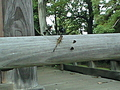
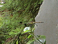
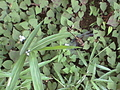

  
いや、自転車で川を下るわけではなくて、前回榎戸から上流を辿ったので今回は同じ場所から下流へと向かう。
結局、最低限の目標と定めた地点まで行って時間切れで引き返したのだが、引き返す地点界隈ではとんぼをたくさん見た。
写真のようなとんぼだけれど、僕の記憶には赤とんぼと胴体が薄いブルーと黒の種類しかなかったので、最初に見つけたときは、これって珍しい種類かも？？と思ってしまったが、その後続々と見つかったのでめずらしいわけではないんだろうな。
しかし、名前がわからない。 なんて名前でしょうね？
同じ場所でまるでカゲロウのようにへろっとした真っ黒い羽のとんぼもみつけたんだが、あれはなんだったんだろう？
ついでにいうと、道々寄った公園でとんでもなくでかいそれこそ単二の乾電池くらいの胴体の蜂に危うく襲われそうになったんだけど、あれはなんだったのだろう？いちおうスズメバチも何回か見たけど、あそこまででかくはなかった。
在来種じゃなかったりして？
写真を取れなかったのが残念でした。